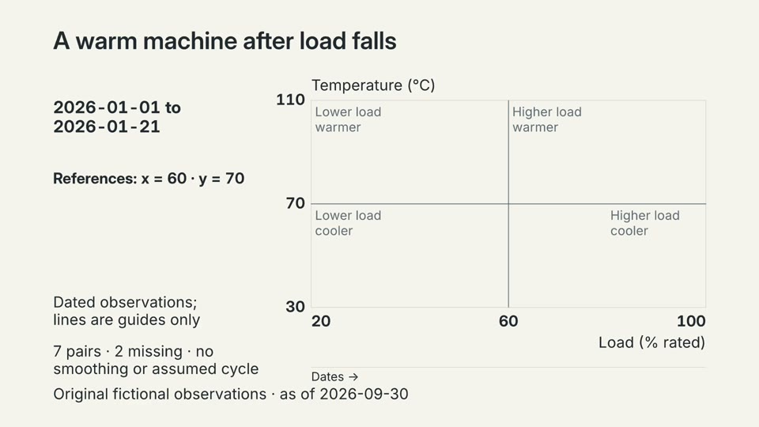
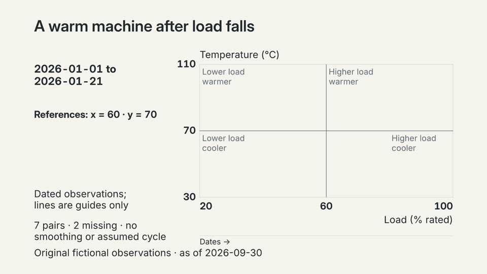
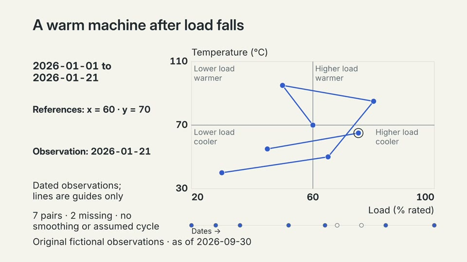
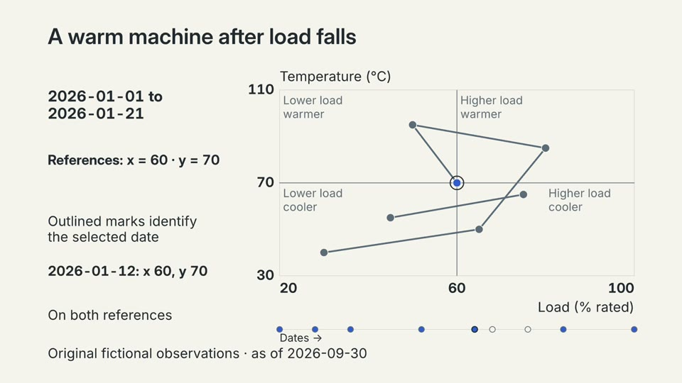
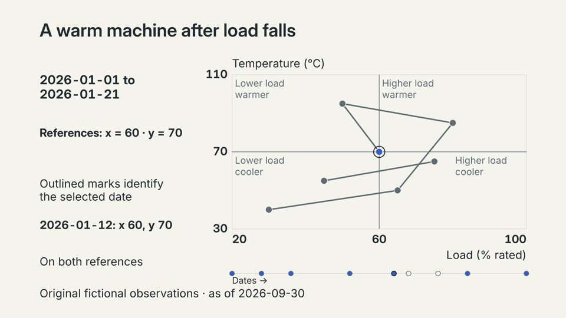

trail: first frame

trail: entrance

trail: last frame
Before focus

focus: first frame
focus: entrance

focus: last frame
Decoded from video.mp4. Draft timing: estimates may be present. Inspect joins, caption visibility and word starts/ends. Frame labels belong to this review page only. Listen to the MP4 to judge synchronization and sound.




